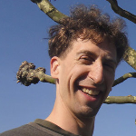

|  |
Arno Klein
Email: arno@binarybottle.com Phone: 917-512-5627 Open Science Framework: papers, posters, proposals, and presentations |
|
Current research: mobile health and brain imaging
(see contributions to science).
As Director of the MATTER Lab at the Child Mind Institute in Manhattan, I help build technologies to study mental illness and offer potential interventions. Previous positions include Director of Neuroimaging at Sage Bionetworks, Assistant Professor of Clinical Neuroimaging at Columbia University, and Information Synthesis Theorist at the Parsons Institute for Information Mapping. |
Employment |
||
| 2016 - |
Director of Innovative Technologies Child Mind Institute, Manhattan - Building wearables, apps, and other technologies to study mental illness and offer potential interventions |
|
| 2014 - 2016 |
Director of Neuroimaging Principal Scientist of Systems Biology Sage Bionetworks, Seattle, WA - Mobile health research app development - Feature extraction from mobile phone sensor data - Open science contests and crowdsourced data analysis |
|
| 2012 - 2013 |
Research Assistant Professor Department of Psychiatry and Behavioral Science State University of New York (SUNY) at Stony Brook - Research imaging biomarkers of depression and PTSD |
|
| 2007 - 2012 |
Assistant Professor of Clinical Neurobiology Division of Molecular Imaging and Neuropathology Department of Psychiatry New York State Psychiatric Institute Columbia University - Research human brain image processing, registration, and labeling |
|
| 2004 - 2007 |
Information Synthesis Theorist and Program Analyst Parsons Institute for Information Mapping The New School, NY - Complex data visualization and information visualization - Construction of visualization ontologies |
|
| 2004 - 2005 |
Research Scientist Department of Psychiatry Columbia University, NY - Detect biomarkers of disease in brain MRI data |
|
Education |
||
| 1998 - 2004 |
Weill Medical College of Cornell University, NY Functional MRI Laboratory, Memorial Sloan-Kettering Cancer Center Functional MRI Research Center, Columbia University Ph.D. in Neuroscience, May, 2004 Thesis: Automated brain labeling with Mindboggle - Invented Mindboggle to automate anatomical labeling of human brain data - Simple mindreading based on task-evoked fMRI activity |
|
| 1996 - 1998 |
California Institute of Technology Computation and Neural Systems Program - Brain tissue optics research (with 2-photon microscopy and uncaging) - Biophysical computer modeling of light propagation - Kung fu and Muay Thai kickboxing clubs |
|
Teaching and Service |
||
| 2007 - |
Invited lectures about brain imaging research at: - NIH - USC - Yale - IBM - UCLA - Rutgers - UPenn (2x) - Dorkbot (3x) - Stanford (2x) - Janelia Farm - Columbia (10+x) - Child Mind Institute - Max Planck Institute - University of Konstanz - Stony Brook University - University of Washington - Seattle Hacker houses (4x) |
|
| 2009 - |
Reviewer for neuroscience- and sensor-related journals including:
- NeuroImage - Neuroinformatics - Human Brain Mapping - Brain Structure and Function - IEEE Trans. on Medical Imaging - IEEE Trans. on Biomedical Engineering - IEEE J. of Biomedical & Health Informatics - International Journal of Biomedical Imaging - Journal of Child and Adolescent Psychopharmacology - Psychiatry Research, Psychiatry Research: Neuroimaging |
|
| 2012 - 2017 | Associate Editor for Frontiers in Brain Imaging Methods | |
| 2009 - 2017 |
Member of the International Neuroinformatics Coordinating Facility's
Neuroimaging Task Force |
|
| 2012 - 2013 | Lecturer for Stony Brook University Medical Center's imaging seminar | |
| 2008 - 2010 | Lecturer and guest lecturer for brain imaging courses, Columbia University | |
| 2005 - 2007 |
Lecturer on data visualization and visualization ontologies to academic and government audiences, including: - National Academy of Sciences - Office of the Director of National Intelligence - National Geospatial-Intelligence Agency - Port Authority of New York and New Jersey - Under Secretary of Defense at the Pentagon - ESRI and GEOINT conferences |
|
| 2005 - 2007 |
The New School (New York City): - MFA thesis evaluator and guest lecturer for design classes - Designed an M.S. curriculum for the Office of the President - Media Curricular Subchair under the Provost's office |
|
| 2004 | Review panel member, National Science Foundation | |
| 1994 - 1996 | Teaching assistant (holography laboratory instructor), Media Laboratory, MA | |
| 1993 | Algebra instructor, Washtenaw Community College, Ann Arbor, MI | |
| 1990 - 1991 | English school instructor, Tokyo, Japan | |
| 1990 | Graduate school mentor for holography projects, USC, CA | |
Funding |
||
| 2017 - 2022 |
Predicting Heterogeneous Neurodevelopmental Outcomes in School-age Children with Early Caregiving Adversities NIH R01 2 R01 MH091864-06: $3,600,303 Role: Co-Investigator (5%); P.I.: Nim Tottenham and Michael Milham Goal: Improve prediction of mental health outcomes for children with early caregiving adversities and identify children who would benefit most from specific early interventions by collecting and analyzing longitudinal multimodal brain imaging and behavioral assessments in school-age children. |
|
| 2015 - 2016 |
NCANDA-USA Consortium: Data Analysis Center BD2K supplement Role: Subcontract (15%) Goal: Develop software to advance the integration and harmonization of derived features and shape measures from NCANDA data (National Consortium on Alcohol and Neurodevelopment in Adolescence). |
|
| 2010 - 2014 |
Biological Predictors Software Supplement NIH U01 grant supplement 3U01MH092250-03S1: $548,996 Role: Co-Investigator (90%); P.I.: Ramin V. Parsey Goal: Extend feature extraction, identification, and shape analysis algorithms in the Mindboggle software. Test prognostic accuracy of feature-based biomarkers using EMBARC data (NIH U01 MH074813). |
|
| 2012 - 2013 |
Biological Predictors of Response to Antidepressants NIH U01 grant MH074813: $450,082 Role: Co-Investigator (25%); P.I.: Ramin V. Parsey Goal: Reduce the trial and error associated with finding an effective antidepressant by using data from pre-treatment quantification of 5-HT1A receptors and 5-HTT to guide antidepressant treatment selection. |
|
| 2009 - 2012 |
Mindboggling Shape Analysis and Identification NIH R01 grant MH084029: $959,557 Role: Principal Investigator (80%) Goal: Develop open source Mindboggle software to automatically extract and identify brain features from MR images, label brain regions, and measure the shapes of the features and regions. |
|
| 2012 |
Ellora Documentation Project Funded by the government of India. Role: Co-Director Goal: Develop and use a web application to geolocate the thousands of sculptures and images of the Ellora cave temples of India with respect to temple ground plans. Use this geolocation information to create walkthroughs of the temples in the website http://elloracaves.org. |
|
| 2006 |
Photodocumentation of the Ellora Cave Temples in India Mellon Foundation grant Role: Co-Director Goal: Create the world's first comprehensive photodocumentation of the sculptures and images of the Buddhist, Hindu, and Jain cave temples at Ellora. Annotate the thousands of photographs, and create a website to curate this information. |
|
| 1993 |
Holographic research Independent research grant, University of Michigan, Ann Arbor, MI Role: Principal Investigator Goal: Create a multiplex holographic stereogram to display an animated, computer-generated model of a chameleon in three dimensions. |
Contributions to ScienceOpen science and mobile health researchI am a passionate proponent of open science, where researchers share data, code, resources and ideas, and where collective, collaborative endeavors are preferred over separate silos of independent research. At Sage Bionetworks, I helped to coordinate open biomedical challenges such as the Alzheimer's Disease Big Data DREAM Challenge. To vastly scale up open medical research, I have been heavily engaged in mobile health research projects. Before joining the Child Mind Institute, I was the scientific lead on the mPower app for tracking symptom severity in Parkinson patients, one of the first research applications built on top of Apple's open source ResearchKit platform. I built the mhealthx software pipeline for extracting features from sensor data from apps such as mPower, and designed visualizations to present mhealth data to patients, clinicians, and researchers. Brain image analysis Brain image morphometry is almost universally restricted to computing volumes and thicknesses for labeled gyri and subcortical structures. To better characterize the anatomy and shapes of brains, as P.I. of an R01 project (MH084029) I oversaw the construction of a new brain labeling protocol and the world's largest manually labeled set of brain images, labeled according to this more consistent and accurate protocol. One goal was to create tools for extracting different kinds of brain features and to characterize their shapes in more detailed ways, so I created and continue to be the main developer of the open source mindboggle software for automated brain feature extraction, labeling, and shape analysis. Features include anatomical regions (like gyri and subcortical regions), sulcal folds, and fundus curves. Shape measures include two types of depth, two types of curvature, volume, thickness, Zernike moments, Laplace-Beltrami spectra, etc. Using the mindboggle software, I recently completed the largest brain shape studies ever conducted, one as part of the Alzheimer's challenge mentioned above, for estimating cognitive state based on MR data, and two others as part of a large-scale characterization of normal brain shape variation. I also helped develop a new method called "concurrence topology" for analyzing high-order relationships in temporal data (such as functional brain imaging data) using persistence homology, itself a new method from algebraic topology. Large-scale brain image processing software evaluations With the rapid growth in the number of brain image processing algorithms, it has become extremely difficult to know how they compare with each other or which to choose for a given study. This is exacerbated by the fact that the developers of these algorithms rarely conduct a rigorous evaluation against other methods, so I published the largest registration and brain extraction evaluation studies ever conducted and have since participated in evaluation studies of other brain image processing steps as well. Invertebrate sleep and learning I have collaborated with my identical twin brother for years, and these studies have focused on how invertebrate sleep impacts a society, when and where bees sleep, and how it affects their ability to communicate. Holography Since the time I built a basement optics lab with a friend in high school to create holograms, I have been making display holograms and conducting research on 3-dimensional display technologies, at the University of Southern California, the University of Michigan, and at the MIT Media Laboratory. For my thesis work at MIT, I created the deepest dispersion-controlled viewing stations, and the thinnest edge-lit holograms, both of which use a hologram to present specially controlled light sources (pre-distorted wavefronts or pre-dispersed light) to a second, display hologram for sharper and deeper images. Since then, I have formulated a general raytracing equation for holograms. Holography has influenced my later research in surprising ways. |